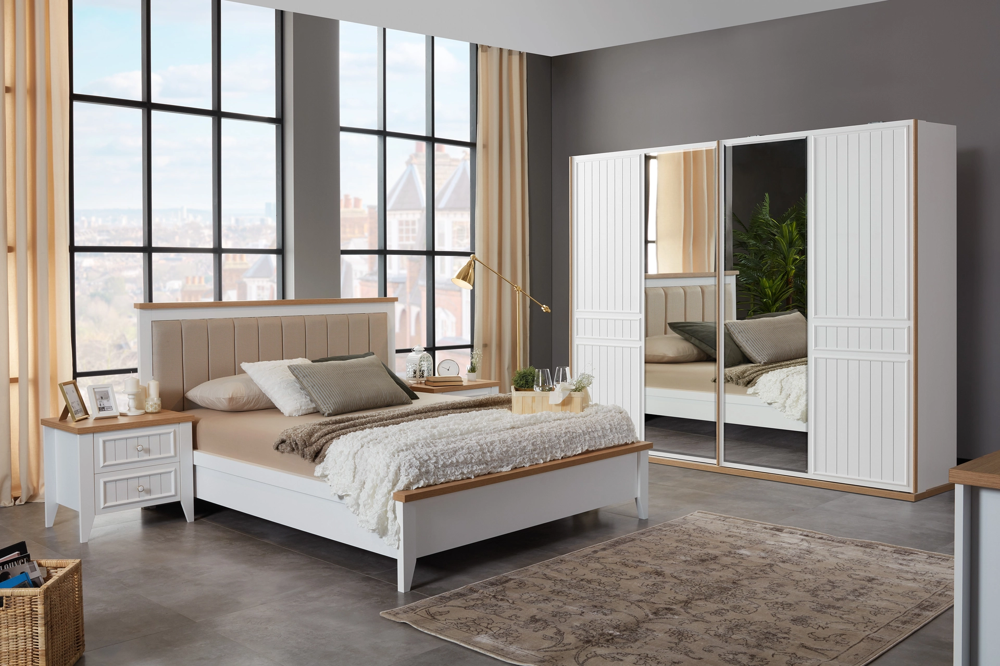
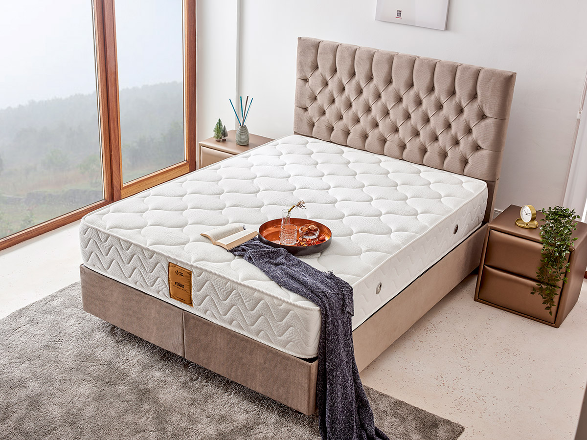
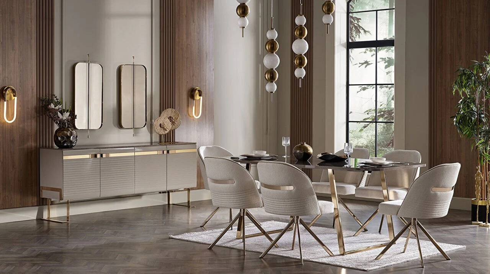
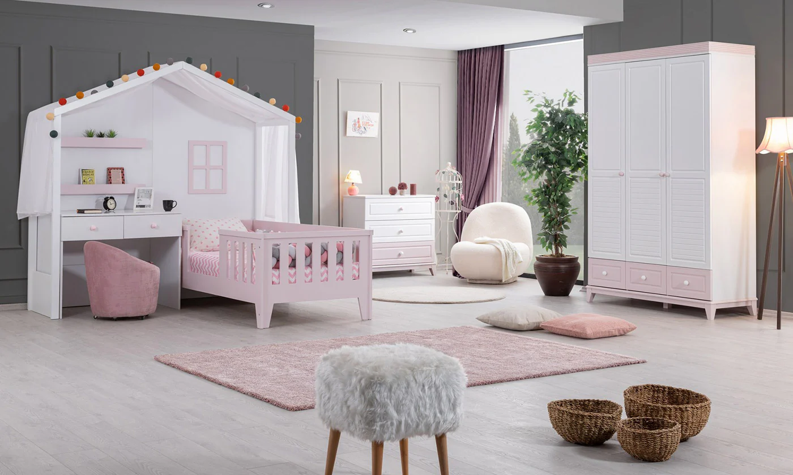
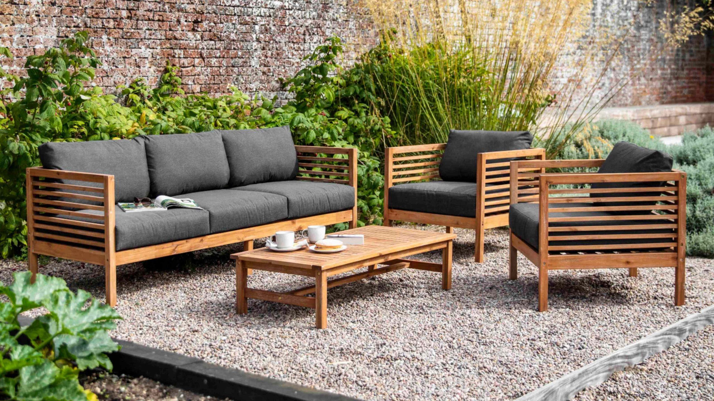

Kategoriler
Oturma Odasi

Salon oturma odası grupları, evlerde maksimum konfora ulaşabilmeye zemin hazırlar. Kişisel beğenilere göre dekorasyonu şekillendirmeye olanak tanıyan koltuk takımı modelleri, zengin ürün yelpazesine sahiptir. Oturma odasına yerleştirilmek üzere seçilebilecek ürün çeşitliliği arasında farklı tasarımlar bulunur. L koltuk veya köşe koltuk takımları da bu seçenekler arasında yerini alır. Geniş aralıkta sunulan seçenekler, evdeki eksikleri güvenle tamamlar.
Koltuk Takimlari
Dekorasyon süreci boyunca ince eleyip sık dokuduğumuz iç mekanlar arasında yer alan oturma odaları, özenle seçtiğimiz unsuları ile her gün, uzun saatler boyunca bizi ve sevdiklerimizi kuşatacak atmosferin merkezi olarak ön plana çıkıyor. Bir oturma odasına karakterini kazandıracak, onun stilini belirleyerek iddiasını ortaya koyacak öğelerin başında ise koltuk takımları geliyor. Televizyon ve çay keyiflerinizin, misafir sohbetlerinizin, uzun bir günün ardından ayaklarınızı uzatıp dinlenmenizin eşlikçisi olacak birbirinden şık ve konforlu koltuk takımlarını bu kategori altında inceleyebilirsiniz.
Chester Koltuk Takimi

Klasik tarzın modern yorumuyla zenginleşen chester mobilya takımı modelleri birçok seçenek sunar. Model çeşitleri işlevsel, ergonomik tasarımıyla kullanıcıların beğenisini kazanır. Dayanıklılığı ile uzun ömürlü kullanım vadeder. Konforlu oturma alanları, göz alıcı tasarımları yaşam alanlarınızı estetik ve rahatlıkla buluşturarak keyifli oturma deneyimi yaşatır. Chester avangart koltuk takımı geleneksel dizaynı işlemeli detaylarla bir arada kullanarak alana modern hava katar. Modeller arasında bulunan chester koltuk takımı gri alana zarif dokunuş sağlar. Minimalist tarzı ile elegan görünüm kazandırır. Model çeşitlerini inceleyerek özellikleri değerlendirebilir, yaşam alanınıza hitap eden ürün seçimi yapabilirsiniz.
Modern Koltuk Takimi

Dekorasyon süreci boyunca ince eleyip sık dokuduğumuz iç mekanlar arasında yer alan oturma odaları, özenle seçtiğimiz unsuları ile her gün, uzun saatler boyunca bizi ve sevdiklerimizi kuşatacak atmosferin merkezi olarak ön plana çıkıyor. Bir oturma odasına karakterini kazandıracak, onun stilini belirleyerek iddiasını ortaya koyacak öğelerin başında ise koltuk takımları geliyor. Televizyon ve çay keyiflerinizin, misafir sohbetlerinizin, uzun bir günün ardından ayaklarınızı uzatıp dinlenmenizin eşlikçisi olacak birbirinden şık ve konforlu koltuk takımlarını bu kategori altında inceleyebilirsiniz.
Avangard Koltuk Takimi

Uçlü ve ikili üniteler, safir mekanizması ile yatak olabilme özelliğine sahiptir. Tasarımına özel sırt ve kol dış yanlarındaki dikiş uygulaması, ürüne zengin bir görsellik kazandırır. Yüksek siyah plastik ayaklar, estetik görünümün yanı sıra temizlik kolaylığı sağlar. Yumuşak tuşeli, deri görünümlü örme kumaş kullanılarak üretilmiştir. Kumaş yapısı, kolay temizlenebilir ve aşınmaya karşı dirençli özellikler sunar. İnsan sağlığına dost malzemeler kullanılarak üretilmiştir. Üründe kanserojen madde içermeyen E1 standartlarına uygun malzemeler tercih edilmiştir. Üçlü ünite oturumunda 32 dns soft sünger kullanılarak ekstra konfor ve dayanıklılık sağlanmıştır. Sandra berjerde, geniş bir kullanım alanına uygun döküm sünger kullanılarak sağlıklı, esnek, konforlu ve dayanıklı bir yapı oluşturulmuştur.
Yatak Odasi
Günün çok büyük bir bölümünü geçirdiğimiz yatak odası, evlerimizdeki en özel yaşam alanlarımızdan biridir. Yeni güne enerjik ve huzurlu başlamanın yanı sıra yoğun geçen bir günün tüm yorgunluğunu atmak da konfor sunan yatak odası takımları seçmekten geçer. Yatak odanızda bedeninizin ergonomik rahatlığını sağlamak ve şık yatak odası parçaları ile özgün tarzınızı yuvanızın sıcaklığıyla bütünleştirmek istiyorsanız, İstikbal koleksiyonları sizi bekliyor!
- Dolap
- Sifonyer
- Komidin
Yatak ve Baza
Rahat bir uyku uyumak için kaliteli yatak ve baza bir evde olması gereken mobilyaların başında gelir. Güne zinde başlamak, dinlenmiş şekilde kalkmak ve sağlıklı bir yaşam için yatak baza seçimi önemlidir. Kalitesiz bir uyku ile tüm gece rahat uyumak mümkün değildir. İyi bir yatakta yatılmadığı zaman vücudun günün yorgunluğunu atması zor olduğu gibi gün içerisinde enerjinizin düşük olmasına neden olur. Bel, sırt ve boyun ağrılarının önemli sebeplerinden biri olan yanlış yatak seçimi ileride ciddi sağlık sorunlarına yol açabilir. Bu yüzden belki de en çok özen gösterilmesi gereken mobilyalar arasında yatak ve bazalar gelir.
- Yatak
- Baza
- Baslik
Yemek Odasi
İnce detaylara sahip yemek odası takımları ile yaşam alanlarınıza şıklık katın! Şık yemek odası mobilyaları tarzını yansıtmanızı sağlar. Sadece ihtiyaç ve alan üzerine stile karar vermek yerine yaşam alanınızın ihtişamını artıracak modelleri değerlendirebilirsiniz. Geniş masalar ve konforlu sandalyelere sahip yemek odası takımlarının parlak görünümü mekan içerisinde görsel şölen sunar.
- Konsol
- Vitrin
- Gumusluk
Cocuk ve Genc Odasi
Ders çalışmadan uyumaya birçok aktiviteyi gerçekleştirirken günün büyük bir kısmını odasında geçiren çocuk ve gençler için genç odası birkaç eşyadan çok daha fazlasıdır.
- Kitaplik
- Ranza
- Besik
Bahce Mobilyasi
Bahçe mobilyaları, bahçe, teras ve balkon gibi alanlarda kullanılan ve güzel havaların tadını çıkarmanızı sağlayan ürünlerin başında gelir. Açık havada son derece nezih ve konforlu bir ortam elde etmeye yarayan bahçe mobilyaları, birkaç aksesuar ilavesi ile sizin ve misafirlerinizin memnuniyetini kolaylıkla en üst seviyeye taşıyabilir.
- Salincaklar
- Bahce Masalari
- Balkon Mobilyasi